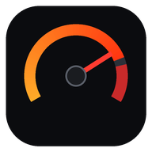

Virtual Pops
Política de privacidade
Resumo: o Virtual Pops não coleta nenhum dado pessoal. Não tem cadastro, login, anúncios, rastreamento nem análise de uso. Nada do que você faz no app é enviado para nós ou para terceiros.
O que fica guardado no seu aparelho
As suas escolhas (carro, situação, pipoco, escape, volume), o hodômetro e as relações de marcha aprendidas pelo OBD2 ficam guardados só no próprio aparelho, no armazenamento do app ou do navegador. Apagar o app ou os dados do site apaga tudo.
OBD2, Bluetooth e rede local
O app só usa o Bluetooth e a rede local (Wi-Fi) para conversar com o adaptador OBD2 (ELM327) do seu carro, quando você toca em conectar. O giro, o pedal e a velocidade lidos do carro são usados na hora para gerar o som e o painel e não saem do aparelho.
Som e vibração
O ronco é sintetizado no próprio aparelho. O app não usa o microfone.
Crianças
O app não coleta dados de ninguém, incluindo crianças.
Mudanças
Se esta política mudar, a versão nova fica publicada nesta mesma página, com a data de atualização.
Contato
Dúvidas sobre privacidade: victorcostv@gmail.com.